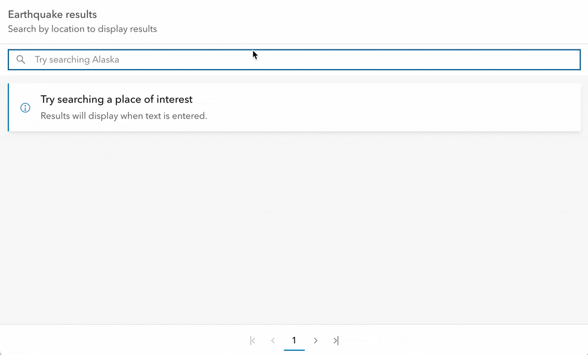

The {calcite} package provides R bindings to Esri’s Calcite Design System designed to work directly with shiny or standalone html.
Installation
The {calcite} package is available on GitHub. Install it using the following command
remotes::install_github("r-arcgis/calcite")Usage
{calcite} consists of many components. See them all in the official documntation.
Use the calcite components to scaffold the UI of your application. The below replicates the navigation example.
library(calcite)
calcite_shell(
calcite_navigation(
slot = "header",
calcite_navigation_logo(
slot = "logo",
heading = "Snow Plow Map",
description = "City of AcmeCo"
),
calcite_menu(
slot = "content-end",
calcite_menu_item(text = "Drivers", `icon-start` = "license", `text-enabled` = TRUE),
calcite_menu_item(text = "Routes", `icon-start` = "road-sign", `text-enabled` = TRUE),
calcite_menu_item(text = "Forecast", `icon-start` = "snow", `text-enabled` = TRUE)
),
calcite_navigation(
slot = "navigation-secondary",
calcite_menu(
slot = "content-start",
calcite_menu_item(breadcrumb = TRUE, text = "All Routes", `icon-start` = "book", `text-enabled` = TRUE),
calcite_menu_item(breadcrumb = TRUE, text = "South Hills", `icon-start` = "apps", `text-enabled` = TRUE, active = TRUE)
)
),
calcite_navigation_user(slot = "user", `full-name` = "Wendell Berry", username = "w_berry")
)
)Setting Attributes
Each component has attributes that can be set in their corresponding function. The calcite_{component}() functions take ... as their only argument. To set attributes, they must be passed in as named values to the function.
For example to use the Calcite UI Icons, the icon attribute must be set.
calcite_icon(icon = "coordinate-system")Accessing Properties
The properties of each component is accessible via the input argument in a shiny server function. They can be accessed in the format of input${id}_{property}. Which returns a list with one element values.
In the below example a calcite_block() is created with an id of block_container. The open property can be observed and fetched using input$block_container_open.
library(calcite)
ui <- calcite_shell(
calcite_block(
id = "block_container",
collapsible = TRUE,
heading = "Example Block",
calcite_notice(open = TRUE, div(slot = "message", "User layer effects sparingly, for emphasis"))
)
)
server <- function(input, output, session) {
observeEvent(input$block_container_open, {
is_open <- input$block_container_open$values
cat(
sprintf("Calcite block is %s\n", ifelse(is_open, "open", "closed"))
)
})
}
shiny::shinyApp(ui, server)
Opening and closing the block writes to the console:
Updating properties
Properties can be updated using the update_calcite() function which requires the id of the element to update and then named values pass to ....
In this example we create a checkbox and an alert. When the checkbox is checked we show the alert by updating the open property using update_calcite()
ui <- calcite_shell(
calcite_card(
heading = "Content",
calcite_label(
layout = "inline",
calcite_checkbox(id = "checked"),
"Click me"
)
),
calcite_notice(
id = "initial-note",
div(slot = "title", "Nice!"),
div(slot = "message", "This is a success message")
)
)
server <- function(input, output, session) {
observeEvent(input$checked_checked, {
checked <- input$checked_checked$values
# Update the `initial-note` property here
update_calcite("initial-note", open = checked)
})
}
shiny::shinyApp(ui, server)Full example
Included in the package is a full application that filters a data.frame of earth quakes. Run the app like so:
app_file <- system.file("examples", "earthquake-app.R", package = "calcite")
shiny::runApp(app_file)